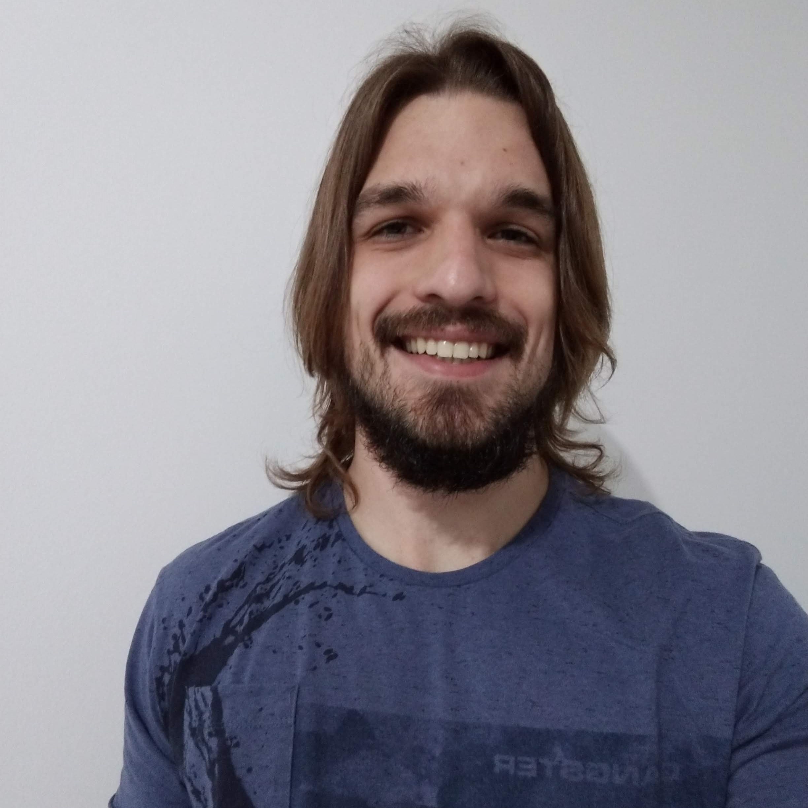

SOBRE
CONHECIMENTOS
OBJETIVO
Rodrigo Steffen Celmer
Aloysio Gabriel Linck, 275, Ivoti - RS
rodrigocelmer@gmail.com
Amante de tecnologia, busco sempre me manter atualizado. Sou determinado, proativo e muito comunicativo.